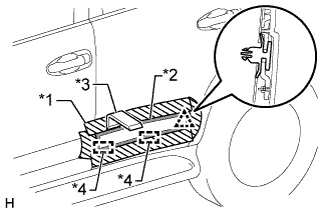

REAR DOOR OUTSIDE MOULDING > REMOVAL |
| 1. REMOVE REAR DOOR OUTSIDE MOULDING SUB-ASSEMBLY LH |
|  |
| Item | Temperature |
| Vehicle Body | 40 to 60°C (104 to 140°F) |
| Rear Door Outside Moulding | 20 to 30°C (68 to 86°F) |
Put protective tape around the rear door outside moulding.
Using a moulding remover, remove the double-sided tape to detach the outside moulding retainer and remove the rear door outside moulding.
| *1 | Protective Tape |
| *2 | Double-sided Tape |
| *3 | Moulding Remover |
| *4 | Guide |
Remove the outside moulding retainer.